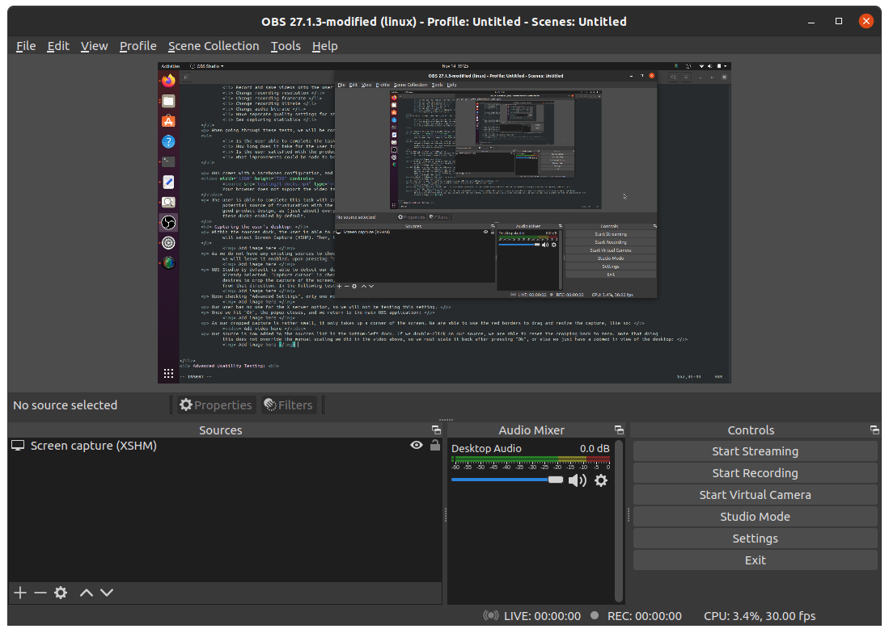

On Ubuntu 20.04 and up, OBS Studio can be found on the Ubuntu Software application
When we click on OBS Studio, we are shown a description and image of the application is shown.
We will install OBS using the green Install button found on this page
After the download and installation is finished, OBS Studio can be found by pressing the "Show Applications" button (3x3 grid on bottom-left of screen).
This means the Ubuntu Software application was able to successfully install OBS Studio
When OBS Studio is launched for the first time, the application successfully opens.
A popup also appears asking us if we want to reset the UI. As this is the first time OBS has been opened, there is no reason for this popup to appear, and is
worth noting as an issue.
I clicked Yes to reset the UI
After "resetting" the UI, an "Auto-Configuration Wizard" appears. I left this on the default setting (Optimize for streaming).
The wizard gives us a popup to connect a streaming service. I chose Twitch. When I tried to connect my account (the reccomended option),
the following Twitch Login popup showed:
However, when I entered my login info, I received the following error:
I next tried the alternative option, using a stream key. The "Get Stream Key" button opens Twitch's Creator Dashboard, where the stream key can be found
I paste the stream key in. This does not throw any errors, and I continue the Auto-Configuration Wizard
The Wizard then runs bandwidth tests to apply ideal settings for streaming:
After this has finished, we are shown the results of the bandwidth testing's findings, and are given an option to apply the settings
I choose to click "Apply Settings"
Next, the following message is shown:
I click "Yes", and another popup appears. The settings are already prefilled with default values. I leave the values unchanged and click "Ok"
After settings the WebSockets Server Settings, no more popups appear, and OBS appears as the following:
This concludes the installation and first-time setup of OBS Studio
Usability testing can be defined as....
First, we will test OBS's ability to find sources and add them to the capture. To do this
we will run the following tests:
Capture the user's desktop.
Capture a specified window on the user's desktop
Capture webcam footage
Capture audio from the user's desktop
Capture microphone audio
Add an image overlay to the recording
Add a video overlay to the recording
Add a text overlay to the recording
Read text from a file and have it overlay the recording
Next, we will tests OBS's streaming and recording capabilities:
Stream to Twitch.tv
Record and save videos onto the user's hard drive
Change recording resolution
Change recording framerate
Change recording bitrate
Change audio bitrate
Have seperate quality settings for streaming and recording
See capturing statistics
When going through these tests, we will be considering the following questions:
Is the user able to complete the task?
How long does it take for the user to complete the task?
Is the user satisfied with the product's ability to do the task?
What improvements could be made to benefit performance/user experience?
OBS comes with a barebones configuration, and we must set up basic docks before we can do anything as a user. The following video demonstrates how to do so:
The user is able to complete this task with zero hiccups. However, if the user is not already familiar with OBS, this task could take time to do. This could be a
potential source of frusturation with the user, as the application (by default) is essentially just a black screen with no options. I do not believe this is
good product design, as (just about) every user will be using these docks to configure their capturing. To improve the usability of OBS, I would suggest having
these docks enabled by default.
Capturing the user's desktop:
Within the sources dock, the user is able to click the "+" button to add a source. Upon pressing this button, a large array of sources pops up. From the popup, we
will select Screen Capture (XSHM). Then, the following popup will appear:
As we do not have any existing sources to choose from, we will use the default "Create new" option. The "Make source visible" checkmark is enabled by default, and
we will leave it enabled. Upon pressing "Ok", the popup closes, and another popup opens:
OBS Studio by default is able to detect our desktop. As the laptop this is tested on has no secondary screens, the "Screens" dropdown menu only has the one option
already selected. "Capture cursor" is checked by default, and "Advanced Settings" is left unchecked. All cropping options are set to 0 by default. If the user
desires to crop the capture of the screen, they are able to input numbers into these fields. These numbers will crop the screen by the specified amount of pixels
from that direction. In the following test, I am able to successfully crop the capture to only show the clock at the top-center of GNOME:
Upon checking "Advanced Settings", only one more option pops up:
Our user has no use for the X server option, so we will not be testing this setting.
Once we hit "Ok", the popup closes, and we return to the main OBS application:
As our cropped capture is rather small, it only takes up a corner of the screen. We are able to use the red borders to drag and resize the capture, like so:
Our source is now added to the sources list in the bottom-left dock. If we double-click on our source, we are able to reset the cropping back to zero. Note that doing
this does not override the manual scaling we did in the video above, so we must scale it back after pressing "Ok", or else we just have a zoomed in view of the desktop:
After about 15-20 seconds of manually rescaling it to fit the capture, we are left with this:

Overall, the user was able to easily complete the task. It did not take long for the user to set up a desktop capture, and OBS makes it extremely intuitive to do so. The only
hiccup seemed to be the lack of a "reset scaling" button (in an easy to find place, at least), as it took about 20 seconds to accomplish what could be done in a single button click,
if that button was placed in an easy to find location.